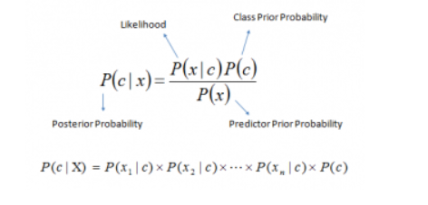

A Beginner's Guide For Naive-Bayes
What is Naive Bayes algorithm
It is a classification technique based on Bayes’ Theorem with an
assumption of independence among predictors. In simple terms, a Naive
Bayes classifier assumes that the presence of a particular feature in
a class is unrelated to the presence of any other feature.
Naive Bayes model is easy to build and particularly useful for very
large data sets. Along with simplicity, Naive Bayes is known to
outperform even highly sophisticated classification methods.
Bayes theorem provides a way of calculating posterior probability
P(c|x) from P(c), P(x) and P(x|c). Look at the equation below:

-
P(c|x) is the posterior probability of class (c, target) given
predictor (x, attributes).
- P(c) is the prior probability of class.
-
P(x|c) is the likelihood which is the probability of predictor given
class.
- P(x) is the prior probability of predictor.
How Naive Bayes algorithm works?
- Convert the data set into a frequency table
- Create Likelihood table by finding the probabilities
-
Use Naive Bayesian equation to calculate the posterior probability
for each class. The class with the highest posterior probability is
the outcome of prediction.
Naive Bayes uses a similar method to predict the probability of
different class based on various attributes. This algorithm is mostly
used in text classification and with problems having multiple classes.
Applications of Naive Bayes Algorithms
- Diagnosis
-
Classifying text documents and spam filtering: Naive
Bayes classifiers mostly used in text classification (due to better
result in multi class problems and independence rule) have higher
success rate as compared to other algorithms. As a result, it is
widely used in Spam filtering (identify spam e-mail) and Sentiment
Analysis (in social media analysis, to identify positive and
negative customer sentiments)
-
Multi class Prediction: This algorithm is also well
known for multi class prediction feature. Here we can predict the
probability of multiple classes of target variable.
-
Recommendation System: Naive Bayes Classifier and
Collaborative Filtering together builds a Recommendation System that
uses machine learning and data mining techniques to filter unseen
information and predict whether a user would like a given resource
or not
Conclusion on Naïve Bayes classifiers
- Naïve Bayes is based on the independence assumption
-
Training is very easy and fast; just requiring considering each
attribute in each class separately
-
Test is straightforward; just looking up tables or calculating
conditional probabilities with normal distributions
Naïve Bayes is a popular generative classifier model
-
Performance of naïve Bayes is competitive to most of
state-of-the-art classifiers even in presence of violating
independence assumption
-
It has many successful applications, e.g., spam mail filtering
- A good candidate of a base learner in ensemble learning